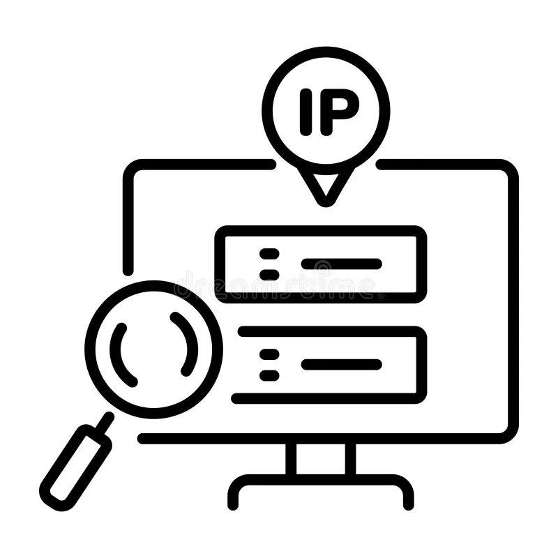
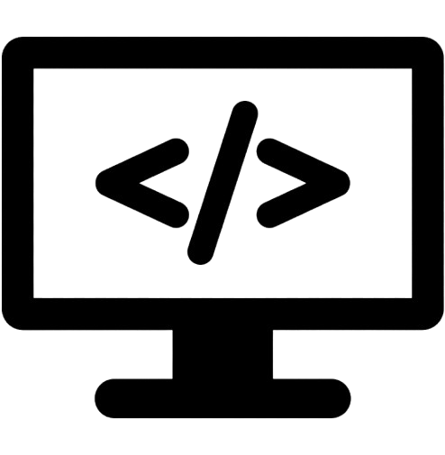
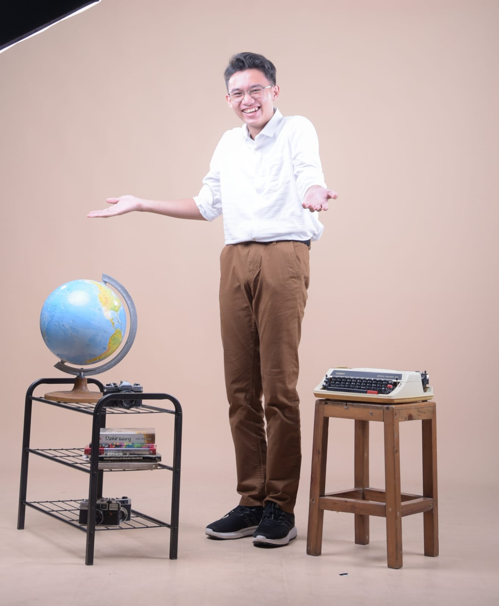

Skills

Subnetting and Configure IP
Cisco Packe Tracer

Design Website
Figma

Web developement
HTML, CSS, JavaScript, Python
Microsoft Office
Word, Excel, PowerPoint
I'm Network Engineer and Web Developement

I am a Telecommunications Engineering student at Telkom University. My expertise lies in website development using HTML, CSS, JavaScript, and React. In addition to website development, I am skilled in IP address creation, subnetting, IP configuration, and other related settings. My career interest is in IP engineering.
Al-Azhar Syifa Budi Cibubur Cileungsi High School
Cileungsi 1 High School: Science Class
Telkom University: Telecommunications Engineering

Cisco Packe Tracer
Figma

HTML, CSS, JavaScript, Python
Word, Excel, PowerPoint